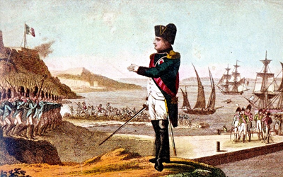
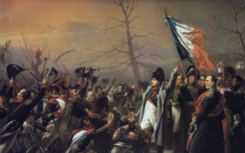
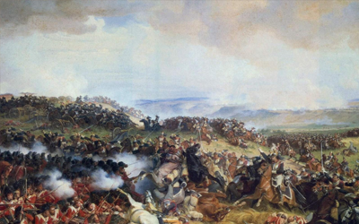

Марш на Париж
26 февраля 1815 года Наполеон, погрузив на несколько судов 1100 солдат, отплыл с Эльбы. Плавание прошло благополучно, и 1 марта солдаты Наполеона уже высаживались в бухте Жуан, на средиземноморском побережье Франции. Не медля, Наполеон двинулся на север. Ни о каком сопротивлении «узурпатору» не шло и речи. Жители небольших городков и поселков встречали императора с искренним восторгом. Толпы крестьян сопровождали наполеоновское «войско», горланя песни и танцуя от радости. Как вспоминал очевидец тех событий Флери де Шабулон, происходящее напоминало какое-то массовое помешательство. «Люди теснились к лошадям свиты [Наполеона], чтобы видеть его, слышать его, ближе рассмотреть, коснуться его одежды. Царило чистейшее безумие».
Но, рано или поздно, вернувшийся император должен был столкнуться с правительственными войсками. Встреча эта произошла близ деревни Ламюр (под Греноблем). Путь Наполеону преградили три полка с артиллерией. Вступать с ними в бой было бессмысленно: у Наполеона не было ни одной пушки, и полки Бурбонов просто разметали бы его отряд одним лишь артиллерийским огнём. Но Наполеон и не хотел боя. Ему важно было вернуться к власти без кровопролития. И вот тут, возле деревни Ламюр, произошла легендарная сцена.
Очевидцы описывают её так. Наполеон приказал своим солдатам опустить ружья, а сам, без сопровождения, неспешным шагом двинулся к выстроенным правительственным войскам. Он подошёл вплотную к «неприятельской» шеренге (а на самом деле — к своим, ещё совсем недавно «наполеоновским» солдатам!). «Солдаты! Узнаёте ли вы своего императора? — спросил Наполеон. — Если кто хочет стрелять в меня — вот он я!». И Наполеон распахнул свой сюртук на груди. Громовые крики послужили ему ответом. Всё «бурбоновское» войско, побросав ружья, кинулось к Наполеону. Солдаты окружили своего кумира, становились перед ним на колени, целовали ему руки и края одежды. Несколько офицеров-роялистов бежали. Триумф Наполеона был полным.
Ней против Наполеона
Города и селения юга Франции один за другим без единого выстрела переходили в руки «корсиканского людоеда». «Мне было достаточно постучать в городские ворота своей табакеркой — и они отворялись», — вспоминал позднее Наполеон. Все военные отряды, направляемые властями, чтобы остановить триумфальное шествие «узурпатора», едва завидев приземистую фигуру в двууголке, тотчас же переходили на сторону «настоящего государя». Именно тогда в Париже на одной из площадей появилось ироничное объявление, написанное каким-то шутником от лица Наполеона: «Уважаемые Бурбоны! Не присылайте, пожалуйста, мне больше солдат. Их у меня и так достаточно!».
Дело принимало для Бурбонов весьма скверный оборот. Поначалу, когда в Париже только узнали о высадке Наполеона в бухте Жуан, всё королевское семейство и придворные сочли это затеей сумасшедшего. Прошло 10 дней — и Наполеон уже в Лионе, втором по величине городе Франции. Который он, как и все прочие города, занял без единого выстрела. Шок, смятение, паника — такими словами можно описать состояние всего королевского двора в те мартовские дни. В судорожной попытке спастись Бурбоны решают противопоставить «захватчику» человека, который был, пожалуй, самой популярной фигурой во французской армии (после, разумеется, самого Наполеона), — маршала Нея.
Герой битвы под Москвой (Бородино), Ней получил за неё от Наполеона титул князя Московского. Маршал не блистал полководческими и политическими талантами, но был безумно отважен и любим солдатами. За свою отчаянную храбрость и честность Ней получил среди современников лестное прозвище «льва французской армии». И вот теперь Бурбоны именно этому человеку поручили разгромить Наполеона. Ней искренне считал возвращение Наполеона злом для Франции — ибо оно неминуемо означало новую войну со всей Европой. А Франция, считал Ней, и так уже принесла огромное количество жертв на алтарь наполеоновской славы. Стране нужен покой и мир. Отбывая к войскам, Ней скоропалительно пообещал королю привезти Бонапарта «в железной клетке». Но чем ближе подходили его полки к Лиону, тем мрачнее становилось настроение солдат. Офицеры избегали смотреть в глаза своему командующему, солдаты угрюмо молчали, а те, кто посмелее, прямо заявляли маршалу: «Вели бы вы нас лучше к нашему императору!».
Последний шаг
Прогнать Бурбонов для Наполеона оказалось делом несложным. Гораздо сложнее было заставить смириться со своим повторным воцарением союзников по антинаполеоновской коалиции (Англия, Австрия, Пруссия и Россия). Никто из этих «союзников» (как раз тогда перессорившихся на Венском конгрессе из-за дележа добычи) не хотел возвращения к власти во Франции человека, одно имя которого внушало им ужас. Общий враг сближает. И союзники, забыв прежние обиды, стали готовить войска для вторжения во Францию. Наполеон тоже понимал, что его судьба должна решиться на поле боя. 12 июня 1815 года он выступил с армией в направлении Бельгии, где концентрировались англо-прусские войска Веллингтона и Блюхера. 18 июня состоялась роковая битва при Ватерлоо. Наполеон потерпел полное поражение.
После Ватерлоо с Наполеоном произошла разительная перемена. Казалось, что-то сломалось в душе этого человека, разрушился какой-то внутренний стержень, прежде не дававший ему падать духом в самых сложных ситуациях. Наполеон потерял всякий интерес к происходящему.
21 июня Наполеон вернулся в Париж. На следующий день он отрёкся от престола. Его второе царствование, продолжавшееся сто дней, окончилось. Но на комфортную ссылку (наподобие острова Эльба) Наполеон теперь уже мог не рассчитывать.
15 июля 1815 года на борту английского корабля «Беллерофон» Наполеон сдался своим злейшим врагам — англичанам. Кровавая двадцатилетняя эпопея Наполеоновских войн завершилась.